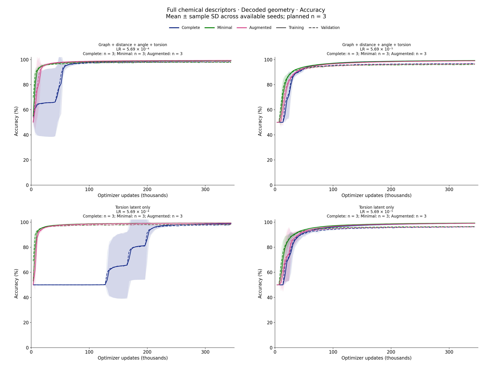
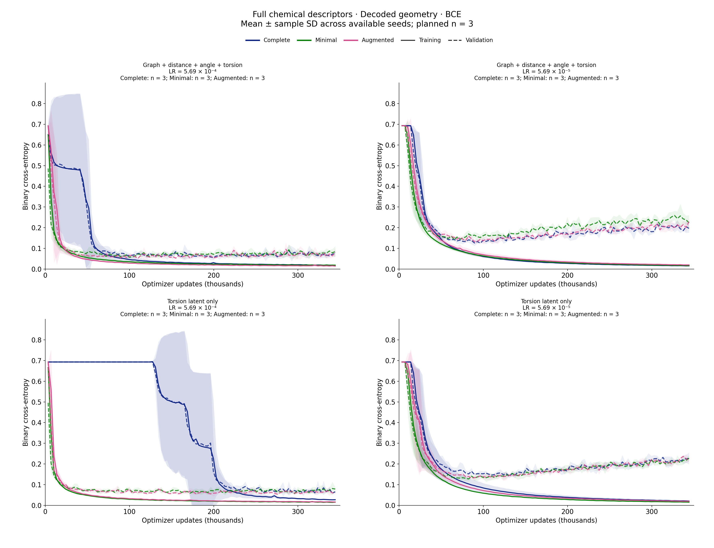
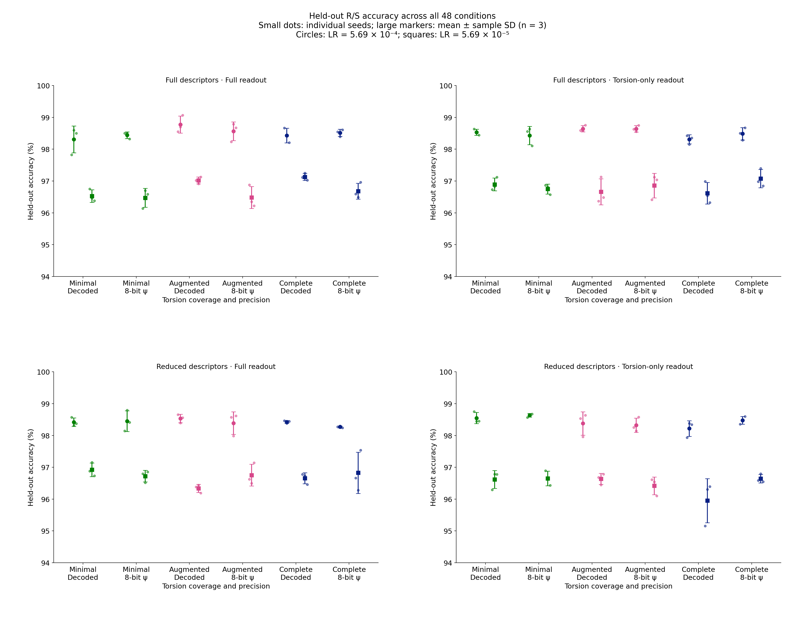
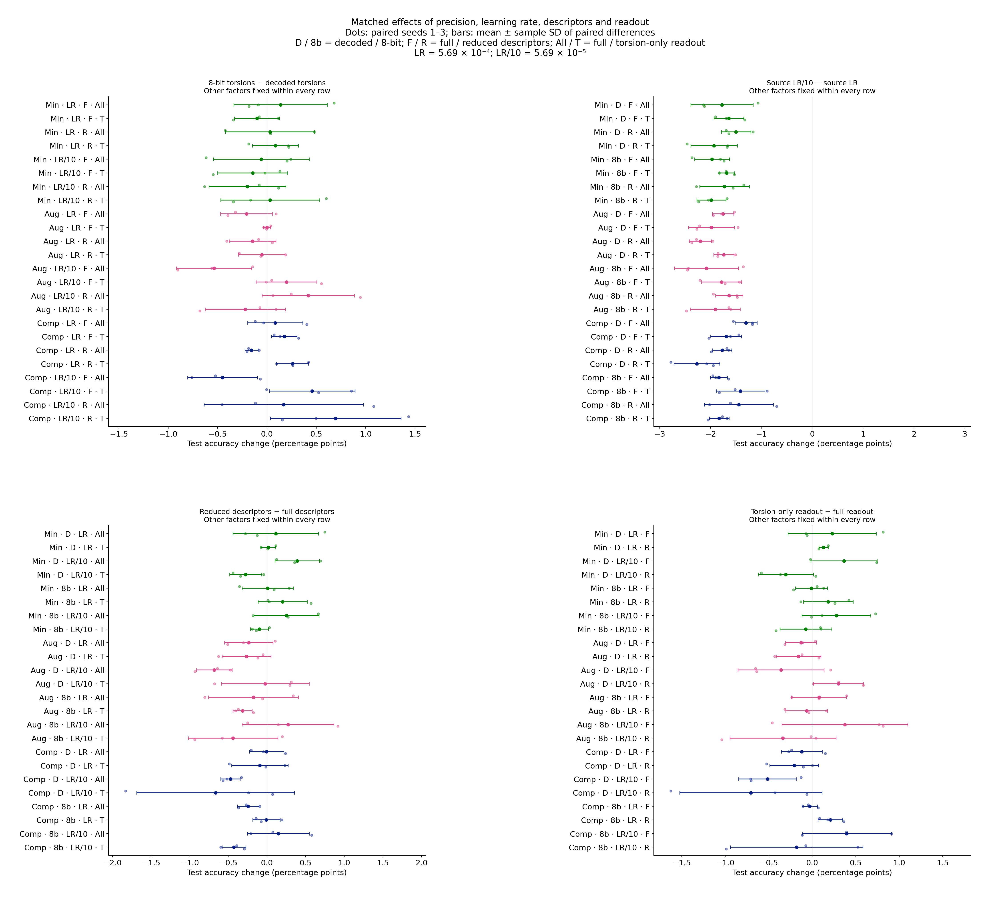
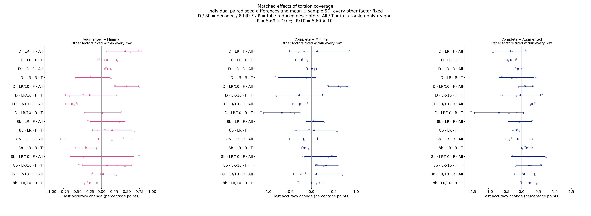
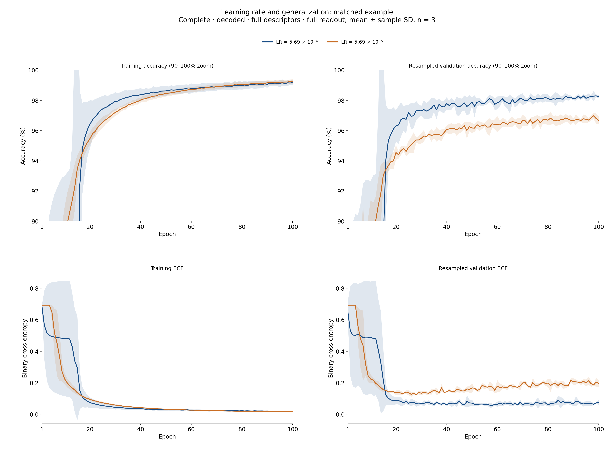
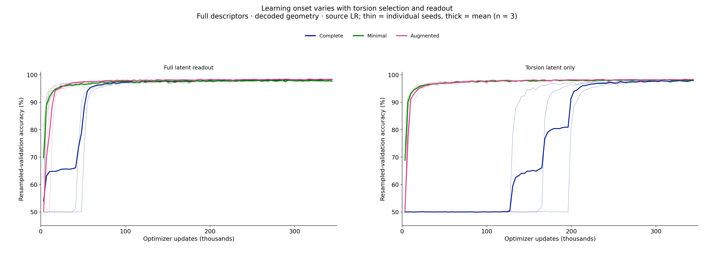
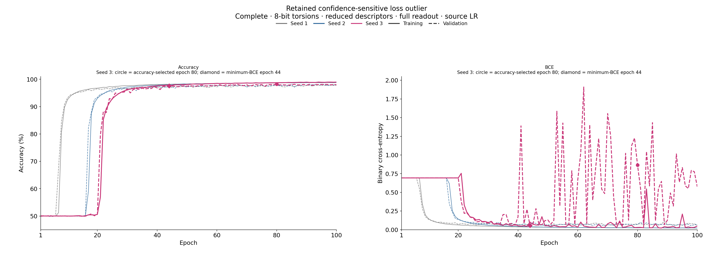

ChIRo R/S training across 48 conditions
October 26, 2026 · 144 training runs · all runs completed
48factor settings
3seeds per setting
100epochs per run
69,719test conformers per run
What the experiment shows
- All three torsion scopes learn successfully by the end of these runs. There are no near-chance final endpoints or observed-collapse endpoint flags. Learning speed can differ substantially: Complete can remain near chance for many epochs, especially with the torsion readout.
- The learning-rate change has the largest consistent test effect. Reducing the original rate tenfold lowers held-out accuracy in all 24 matched conditions and all 72 seed pairs, by 1.30–2.27 percentage points in condition means. Both rates still fit training at about 99%; the smaller rate leaves a larger validation/test gap at the tested exposure.
- Additional 8-bit torsion quantization has a mixed, small design-average effect. Twelve matched condition means improve and twelve worsen. The average is +0.019 percentage points, with conditional effects from −0.537 to +0.695. This is neither a universal benefit nor an equivalence claim.
- There is no universal Minimal, Augmented, Complete ranking. Chemistry and readout alter the scope comparison. Reducing chemical descriptors shifts Complete−Minimal downward in every one of the eight matched remaining-factor condition means, while other contrasts have mixed directions.
- Accuracy and BCE provide different information. A high-accuracy Complete run has unstable validation BCE and remains visible in all summaries. These curves show finite-budget outcomes; 100 epochs do not establish eventual convergence.
Balanced descriptive effects on test accuracy
Each average first combines matched backgrounds within a seed, then summarizes the three seed averages. Its SD is across those three seed averages, not across the 16 or 24 correlated factorial backgrounds. The rightmost column preserves the conditional variation that an overall average can hide.
Training and validation curves
All 48 conditions are covered by eight grids: chemical descriptors × geometry precision × accuracy/BCE. In each grid, rows change the readout and columns change the learning rate. There is no smoothing. Epoch 100 is 344,200 optimizer updates.
Training and validation accuracy

Solid: training. Dashed: resampled validation. Colors: torsion scope. Shading: sample SD across three seeds. Panels hold chemistry and precision fixed and cross learning rate with readout. PNG · SVG · PDFTraining and validation BCE

Solid: training. Dashed: resampled validation. Colors: torsion scope. Shading: sample SD across three seeds. Panels hold chemistry and precision fixed and cross learning rate with readout. PNG · SVG · PDF
Held-out results and paired effects
Every tested condition

All 48 conditions, three seeds each. Small dots are individual seeds; larger markers and bars are mean ± sample SD. Circles use the original learning rate; squares use the tenfold smaller rate. Test checkpoints are selected by validation accuracy.
PNG · SVG · PDFMatched effects of the four binary factors

Each row holds every other factor fixed. Small dots are the three same-seed differences; bars show their mean ± sample SD. The vertical zero line indicates no measured change. Units are percentage points.
PNG · SVG · PDFMatched torsion-scope comparisons

The three scope pairs are compared separately at every matched precision, learning rate, descriptor set, and readout. Mixed signs show why one global ranking would be misleading.
PNG · SVG · PDF
Learning behavior beyond the final accuracy
Training fit and validation generalization

Labelled example: Complete, tag-decoded geometry, full descriptors, combined readout. Mean ± sample SD across three seeds. Accuracy is zoomed to 90–100%; the full learning range is available in the curve grids. Both learning rates fit training well, while the smaller rate has a larger validation gap.
PNG · SVG · PDFDelayed learning is visible at the individual-seed level

Full chemical descriptors, tag-decoded geometry, original learning rate. Individual validation trajectories and means preserve all 100 epochs without smoothing. Complete with the torsion readout first sustains 95% validation accuracy at epochs 55, 65, and 47; Minimal does so at 5, 6, and 6. Here “sustained” means five consecutive logged epochs, a descriptive diagnostic rather than a training gate.
PNG · SVG · PDFHigh accuracy can coexist with unstable probability loss

Complete, additional 8-bit torsions, reduced chemical descriptors, combined readout, original learning rate. Every seed is retained. Seed 3 ends at 98.025% validation accuracy with BCE 0.575; its highest-accuracy checkpoint has BCE 0.866. The earlier minimum BCE was 0.056. Selection remains highest validation accuracy, with no post-hoc loss-based reselection. BCE alone does not identify a calibration mechanism, particularly with resampled validation.
PNG · SVG · PDF
All 48 conditions
Accuracy values are percentages, mean ± sample SD across three seeds. “Selected validation” is the maximum resampled-validation accuracy for each seed; its checkpoint alone supplies that seed’s held-out test result. Hover over a row to see the three test accuracies.
48 conditions
What the comparisons and error bars mean
The crossed design is 3 torsion selections × 2 precisions × 2 learning rates × 2 descriptor sets × 2 readouts × 3 seeds. The original population is retained: 326,865 eligible training records, 70,099 validation records and 69,719 held-out test records. The original paired sampler draws 16 anchors/32 graphs per batch, giving 3,442 optimizer updates per epoch. Checkpoints are chosen by maximum validation accuracy, first tie; test results do not choose the checkpoint or the conditions shown.
Uncertainty unit: the training seed. Curve bands and endpoint bars are sample SD across three training replicates. Paired bars are SD across the three same-seed differences at fixed background factors. Individual seed points or trajectories remain visible. These are not SEMs, confidence intervals, significance tests or molecular sampling errors. Three seeds provide limited evidence about optimization variability.
- Tag-decoded geometry: every arm begins with the compressed source-tag reconstruction. There is no untouched Cartesian-geometry arm in this factorial.
- Additional 8-bit torsions: only the selected model torsions receive extra uniform quantization. Distance and bond-angle arrays remain fixed. The experiment measures the incremental torsion-discretization effect, not the total effect of compact storage.
- Full/reduced chemistry: the reduced set keeps element, total degree, total H count and aromaticity, and zeroes the other atom fields and all bond descriptors at unchanged native 52/14 widths. Connectivity and the graph architecture remain present.
- Combined/torsion readout: the combined 256-component readout contains graph, distance, angle and torsion representations. The 64-component torsion output is still graph/chemistry conditioned; it does not represent four isolated geometric numbers without structural context.
- Coverage: all runs, all seeds, and the audited rare reconstruction cases are retained. No unfavorable run is removed. No universal ordering, statistical equivalence, or asymptotic-convergence conclusion is asserted.
Full numerical interpretation and qualifications
Independent numerical analysis of all 144 ChIRo factorial runs
2026-10-26; snapshot snapshot-709d09ec5eb0812baed37c2b.
All 144 runs completed 100 epochs and full 69,719-conformer test evaluations. The 48 conditions each have three seeds. I independently reconstructed all 432 condition means and 3,888 seed-level metric contrasts from the run ledger; no discrepancy was found. No runs were excluded or selected by accuracy for inclusion. The comparisons below do not choose a model using test accuracy.
For condition plots, use mean plus/minus sample SD across the three training seeds and show each seed. For paired effects, use the same three seed differences with every other factor fixed. The descriptive design averages in the accompanying CSV first average matched conditions within seed, then compute mean and SD over the three seed averages. Do not compute their uncertainty across correlated conformers or across the 16/24 factorial conditions.
Learning rate has the strongest consistent endpoint effect. Reducing the original ChIRo rate 5.694249946e-4 by ten lowers test accuracy in every one of 24 matched conditions and all 72 seed pairs. Condition mean losses range from 1.302 to 2.268 percentage points. The balanced seed-average effect is -1.786 plus/minus 0.057 percentage points. Final training accuracy is nearly unchanged across the balanced design (99.174% versus 99.069%), whereas final validation accuracy is 98.078% versus 96.240%. This is worse validation/test generalization at the tested exposure, rather than inability to fit training. It is not an asymptotic convergence result: median selected epochs are 89 and 96; 58 of 72 lower-rate runs choose epoch 90 or later.
Additional torsion quantization has no uniform endpoint direction. The psi8-minus-decoded test effect is positive in 12 of 24 condition means and negative in 12; the range is -0.537 to +0.695 percentage points. The balanced effect is +0.019 plus/minus 0.028 percentage points. This supports a small design-average incremental effect in this experiment, rather than strict equivalence or a universal benefit of discretization.
There is no universal torsion-scope ranking. Augmented-minus-Minimal test means range from -0.585 to +0.490 percentage points, with ten positive and six negative; Complete-minus-Minimal ranges from -0.667 to +0.600, with eight of each sign. Descriptor reduction changes this comparison: Complete-minus-Minimal shifts downward after reducing chemistry in all eight matched remaining-factor condition means (by 0.104 to 0.865 percentage points). The balanced interaction is -0.297 plus/minus 0.229 percentage points. This is a conditional interaction, not proof that adding torsions inherently helps or harms.
Reduced chemistry has a modest negative design average (-0.127 plus/minus 0.073 percentage points), but conditional effects range from -0.683 to +0.391. Removing graph/distance/angle output branches leaves the graph-conditioned alpha representation: z_alpha-minus-both averages -0.027 plus/minus 0.052 percentage points, with a conditional range of -0.706 to +0.396. Do not describe z_alpha as geometry with no chemical context, or reduced52 as deletion of connectivity or a narrower neural network.
Accuracy and BCE should both remain visible. One Complete/psi8/source-LR/reduced52/both seed-3 run has final validation accuracy 98.025% but BCE 0.575; its selected highest-accuracy checkpoint has BCE 0.866, and its earlier minimum BCE was 0.056. This run is complete and must remain in the seed variance. More generally, lower-rate balanced validation BCE increases from 0.166 at epoch 50 to 0.217 at epoch 100 while training BCE falls. High accuracy alone does not establish good probability estimates. Checkpoint selection remains maximum validation accuracy, not minimum BCE.
All cells begin with decoded source-tag geometries. psi8 adds quantization of model torsions while distance/angle arrays stay fixed. There is no untouched-raw-geometry arm here, so these curves quantify the incremental torsion discretization effect, not the entire effect of storing conformers in the compact format. The original population, labels, and audited rare reconstruction losses are retained.
Three seeds provide limited descriptive uncertainty. Avoid significance or noninferiority claims from overlapping SD bars. Test conformers are correlated within molecules and shared across runs; they are not independent experimental replicates. Large checkpoint/prediction binaries were not freshly rehashed in this read-only analysis; native receipts and pool bindings were checked.
Data, vector figures, and reproducible code
Every scientific figure uses native McUtils plotting and is exported as PNG, SVG and PDF. Links below each image open full-resolution/vector versions. The local snapshot matches all nine original SHA-256 entries. The numerical audit independently reconstructs all 432 condition means and 3,888 seed-level metric contrasts.
Plotting issue recorded for review
A native McUtils log-axis accessor issue was encountered. The delivered diagnostics use linear axes, and no package source change or adapter was applied. Issue description · Unapplied targeted draft patch.
Source snapshot: snapshot-709d09ec5eb0812baed37c2b. These are held-out results from fixed validation-selected checkpoints; the 69,719 conformers are not independent training replicates. Native receipts and bindings were checked; large model/prediction binaries were not freshly rehashed in this analysis.